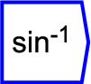

Next: acos
Up: Functions/Unary Operators
Previous: tan
Contents

Produces an arc sine function of the input,
or the inverse of the sine function.
The operator can be placed on the canvas in two ways:
- From the Functions (``function'') toolbar; or
- By typing the letters ``asin'' on the canvas and then pressing the
Enter key.
For further explanation regarding trigonemtric functions, see Wikipedia's page on trigonometric functions.